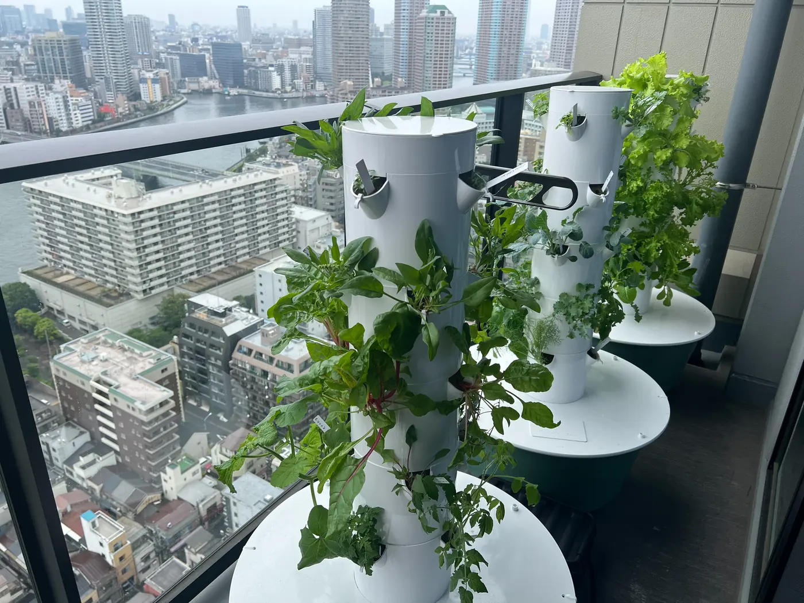

概要
水耕栽培タワーがあれば、ベランダやテラス、育成ライトを使えばキッチンでも、新鮮な葉物野菜、野菜、ハーブ、花を自宅で育てられます。土を使わないので汚れず、ガーデニングの経験も必要ありません。システムはポンプとタイマーで自動的に稼働します。水と養分を入れ、苗を植え、育ったら収穫するだけ。1平方メートルにも満たないスペースに収まる、生きたキッチンガーデンです。
料金
リースは最初の3か月間、お試し期間として月額¥13,000でご利用いただけます。その後は、ご自身でお手入れいただく月額¥11,000、月1回の訪問サービス付きの月額¥15,000、週1回の訪問サービス付きの月額¥18,000から、合うプランをお選びください。タワーは2サイズ。屋内・屋外どちらでも使える5段タワーと、屋外向けの大きめの7段タワーがあります。リース終了時には、割引価格でのタワーの購入、リースの更新、または機材の回収・リセットからお選びいただけます。購入の義務はありません。
含まれるもの
配送と現地での設置、タワーのお手入れと操作方法のご説明、自動ポンプとタイマーシステム、リース終了時の回収またはリセット。すべてを設置し、安心してお使いいただける状態になってからお引き渡しします。
オプション
スターターキット（約¥4,000〜5,000）：養分、pH調整剤、最初の苗のアソートセット。苗：1株¥200から、オンラインフォームでいつでもご注文いただけます。訪問サービス：定期的にプロのチェックを受けたい方向けに、月1回・週1回のプランに含まれます。植物の状態の確認、養分の補充、トラブル対応を行います。